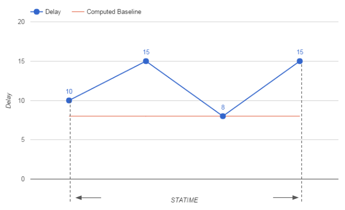
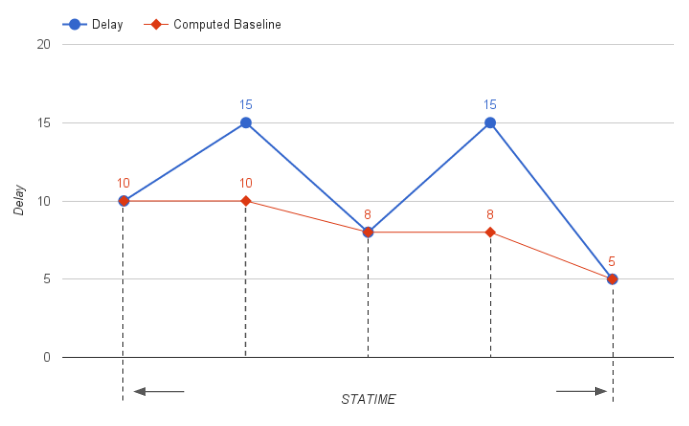
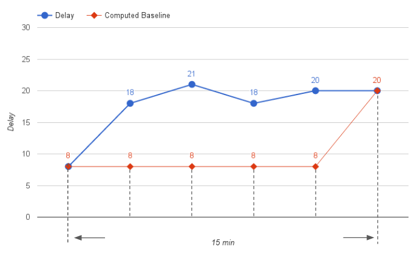

Class MkvE2EDelaySampler
- java.lang.Object
-
- com.iontrading.mkv.MkvE2EDelaySampler
-
@Keep @KeepPublicClassMemberNames public class MkvE2EDelaySampler extends Object
The MkvE2EDelaySampler provides feeding functionality for custom End To End Delay statistics.sampleTimestamp(double) and sampleDelay(double) are the suggested methods to be used for reporting custom End-To-End and custom application Round-Trips, respectively.
The input parameter should be the value of the most precise available system source, in milliseconds, computed as returned by the Mkv.currentTimeMillis() and Mkv.milliTime() functions for End-To-End and application Round-Trips, respectively.
Example of usage:
- for custom End-To-End delays:
MkvE2EDelaySampler sampler = ...; sampler.sampleTimestamp(Mkv.currentTimeMillis());
- for custom application Round-Trips:
MkvE2EDelaySampler sampler = ...; double delay = computeCustomRoundTrip(Mkv.milliTime(), ...); sampler.sampleDelay(delay);
For each sampler, the API computes the following dimensions:
- Delay Min
- Delay Max
- Delay Average
- Delay Baseline
- Delay Average Adjusted
- Delay Max Adjusted
The algorithm for computing the delays and delays adjusted measures works as follows
- for Delay Min/Max, they are the minimum and maximum absolute delays observed within the STATIME
- for Delay Average, it is the average delay observed within the STATIME
- for Delay Baseline, it the minimum delay observed within the run of the component, properly adjusted by the dynamic re-basing algorithm, described below
- for Delay Average Adjusted, it is the average of all adjusted delays observed within the STATIME, excluding the minimum tick if represented in the last STATIME
Every adjusted delay is obtained from the corresponding absolute delay via the formula:delayAdjusted = delayAbsolute - delayBaseline
and it corresponds to a normalization of all absolute delays to the baseline value observed so far - for Delay Max Adjusted, it the maximum adjusted delay observed within the STATIME
Example:
Given the sequence of following absolute delays: { 10, 15, 8, 15 }, supposing it is the first STATIME of the component, we have:

- Delay Min = 8
- Delay Max = 15
- Delay Baseline = 8
- Delay Average Adjusted = ((10-8) + (15-8) + (8-8) + (15-8)) / 4 = 4
- Delay Average = (10 + 15 + 8 + 15) / 4 = 12
- Delay Max Adjusted = (15-8) = 7
The dynamic re-basing algorithm for the computation of the Delay Baseline works as follows:
- whenever a new absolute minimum is found, the Delay Baseline is updated immediately, according to the new minimum:

- when all the minimum delays remain consistently higher than the computed Delay Baseline more than 10ms threshold and for a duration of more that 15min during the component run,
then the Delay Baseline is eventually updated according to the new (higher) minimum:

- See Also:
Mkv.currentTimeMillis(),Mkv.milliTime()
- for custom End-To-End delays:
-
-
Method Summary
All Methods Instance Methods Concrete Methods Deprecated Methods Modifier and Type Method Description voidsampleDelay(double delay)Track the given delay.voidsampleDelay(int delay)Deprecated.voidsampleSupplyTimestamps(long timestamp, double timestampExt)Track the given supply timestamps coming from a MkvRecord.voidsampleTimestamp(double timestamp)Track the given timestamp.voidsampleTimestamp(long timestamp)Deprecated.voidsampleUsemsecsUnitsDelay(int delay)Deprecated.voidsampleUsemsecsUnitsTimestamp(long timestamp)Deprecated.
-
-
-
Method Detail
-
sampleDelay
public void sampleDelay(int delay)
Deprecated.Track the given delay.- Parameters:
delay- The delay, in milliseconds
-
sampleUsemsecsUnitsDelay
public void sampleUsemsecsUnitsDelay(int delay)
Deprecated.Track the given delay.- Parameters:
delay- The delay, in the units implied by the USEMSECS configuration property
-
sampleDelay
public void sampleDelay(double delay)
Track the given delay.- Parameters:
delay- The delay, in milliseconds; the fractional part of the delay is taken into account in order to express microsecond granularity
-
sampleTimestamp
public void sampleTimestamp(long timestamp)
Deprecated.Track the given timestamp.The associated delay is automatically calculated.
- Parameters:
timestamp- The timestamp, as the difference, measured in milliseconds, between the expressed time and midnight, January 1, 1970 UTC.
-
sampleUsemsecsUnitsTimestamp
public void sampleUsemsecsUnitsTimestamp(long timestamp)
Deprecated.Track the given timestamp.The associated delay is automatically calculated.
- Parameters:
timestamp- The timestamp, as the difference, measured in the units implied by the USEMSECS configuration property, between the expressed time and midnight, January 1, 1970 UTC.
-
sampleTimestamp
public void sampleTimestamp(double timestamp)
Track the given timestamp.The associated delay is automatically calculated.
- Parameters:
timestamp- The timestamp, as the difference, measured in milliseconds, between the expressed time and midnight, January 1, 1970 UTC; the fractional part of the delay is taken into account in order to express microsecond granularity.- See Also:
Mkv.currentTimeMillis()
-
sampleSupplyTimestamps
public void sampleSupplyTimestamps(long timestamp, double timestampExt)Track the given supply timestamps coming from a MkvRecord.The associated delay is automatically calculated.
Use this method to report Custom End-To-End latencies based on the received MkvRecord supplies. The parameters should be retrieved from the MkvRecord using getLastTStamp() and getLastMUTStamp(). The first parameter is the low-resolution timestamp, the second paramter is the high-resolution timestamp.
This method is provided for backward compatibility, when the Subscriber application is using J-API ≥ 136 while the the Publisher application could be any version.
The typical usage is
public void onFullUpdate(MkvRecord record, MkvSupply supply, boolean isSnapshot) { MkvE2EDelaySampler sampler = Mkv.getInstance().getPlatform().getE2EDelaySampler(record.getFrom()); sampler.sampleSupplyTimestamps(record.getLastTStamp(), record.getLastMUTStamp()); }- Parameters:
timestamp- The timestamp, as retrieved from the MkvRecord using getLastTStamp()timestampExt- The extended timestamp, as retrieved from the MkvRecord using getLastMUTStamp()- See Also:
Mkv.currentTimeMillis()
-
-